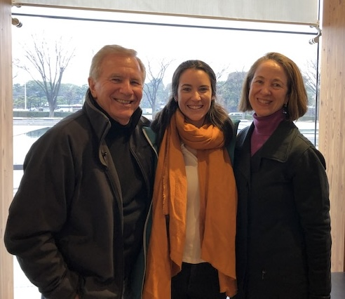

Content
Portland
Back in 2019, the first stop of my post-Uni gap year was Japan. Whilst awaiting a tour of the Imperial Palace Easy Gardens in Tokyo, I got chatting with a lovely couple from the US, Eric and Hollie, and after the tour we grabbed lunch and have since kept in touch.
They visited when I was living in Malta, got to take them to the Birgu Candlelight Festival and show off the Australian-owned restaurant Two Buoys. Now it was my turn to visit and see what Portland has to offer.